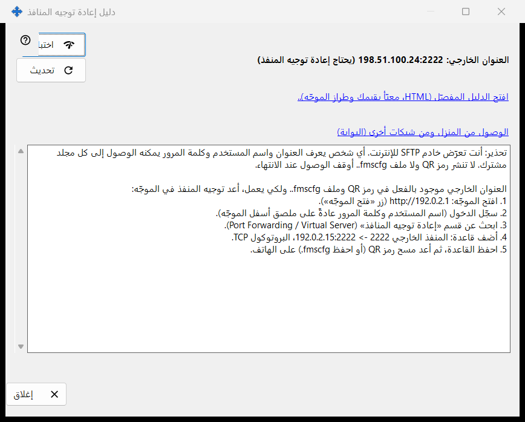
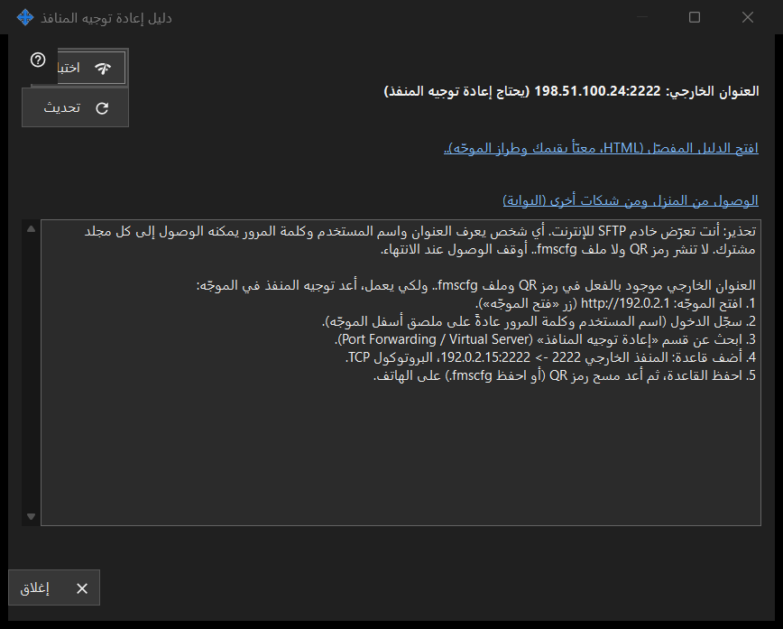

دليل إعادة توجيه المنافذ
الغرض من هذه النافذة
يساعد على جعل المشاركة قابلة للوصول من خارج شبكتك المنزلية. يعرض العنوان الخارجي وهل فُتح المنفذ تلقائياً أم يحتاج إلى توجيه في الموجّه، ويقدّم اختباراً ودليلاً مفصّلاً. يُفتح من زر كيفية إعداد الوصول من الإنترنت في النافذة الرئيسية.


بهذا الترتيب
- ابدأ المشاركة أولاً؛ وإلا تطلب النافذة ذلك.
- اقرأ أسطر الحالة: يمكن الوصول إليه، أو خلف CGNAT، أو يحتاج إلى إعادة توجيه المنفذ.
- إذا لزم التوجيه فافتح الدليل المفصّل وأنشئ القاعدة في الموجّه.
- اضغط اختبار لفحص العنوان من هذا الكمبيوتر.
- تأكد من الهاتف عبر بيانات الجوال مع إيقاف Wi-Fi فيه.
عناصر النافذة
الحالة
تكتشف النافذة العنوان الخارجي وتقول أحد الأمور التالية: يمكن الوصول إليه من الإنترنت، أو العنوان الخارجي: .. (يحتاج إعادة توجيه المنفذ)، أو العنوان الخارجي غير معروف - راجع الموجّه.، أو خلف CGNAT - غير قابل للوصول من الخارج.. عند فتح المنفذ تلقائياً (UPnP) لا حاجة إلى إعداد الموجّه، ومع ذلك لا يؤكد أنه يعمل إلا الهاتف على بيانات الجوال. تحديث يكرر الاكتشاف.
الموجّه والأدلة
يعرض سطر الموجّه عنوانه، أو جارٍ التعرّف على الموجّه.. أثناء البحث عنه. الرابط افتح الدليل المفصّل (HTML، معبّأ بقيمك وطراز الموجّه).. يفتح دليل HTML محلياً؛ وإذا تعذّر فتحه تذكر النافذة ذلك. الرابط الوصول من المنزل ومن شبكات أخرى (البوابة) يفتح صفحة المساعدة المناسبة في بوابة المساعدة في المتصفح.
اختبار
يفحص العنوان الخارجي من هذا الكمبيوتر ويُبلغ عن: خادم SFTP متاح، أو المنفذ مفتوح لكن لا استجابة من SFTP، أو اتصال مغلق (ربما بسبب حد الاتصالات)، أو عدم وجود جواب. النتيجة غير حاسمة: كثير من الموجّهات ترفض طلباً إلى عنوانها الخارجي من الداخل، لذا فالفحص الموثوق هو الهاتف على بيانات الجوال.
السلامة
فتح SFTP للإنترنت يمنح كل مجلد مشترك لأي شخص يعرف العنوان واسم المستخدم وكلمة المرور. لا تنشر رمز QR ولا ملف .fmscfg وأوقف المشاركة عند الانتهاء. إغلاق يغادر النافذة.